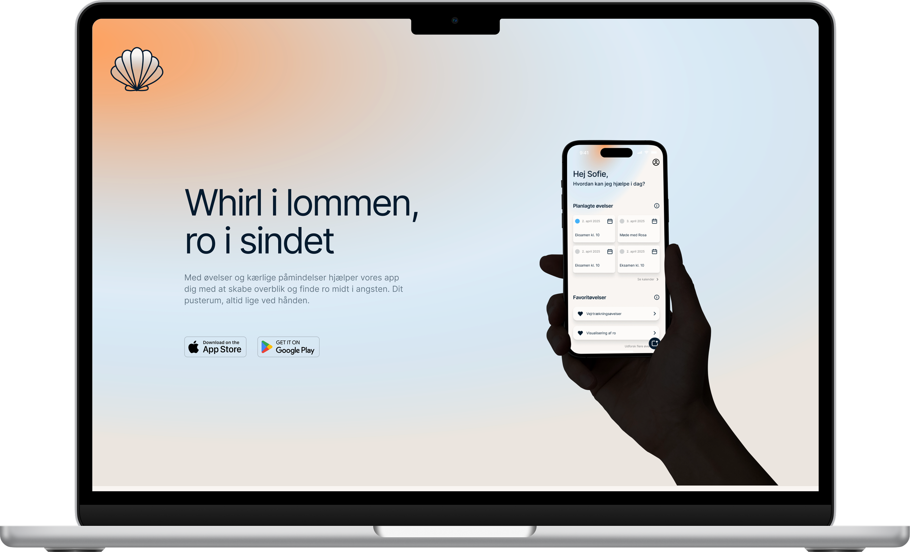
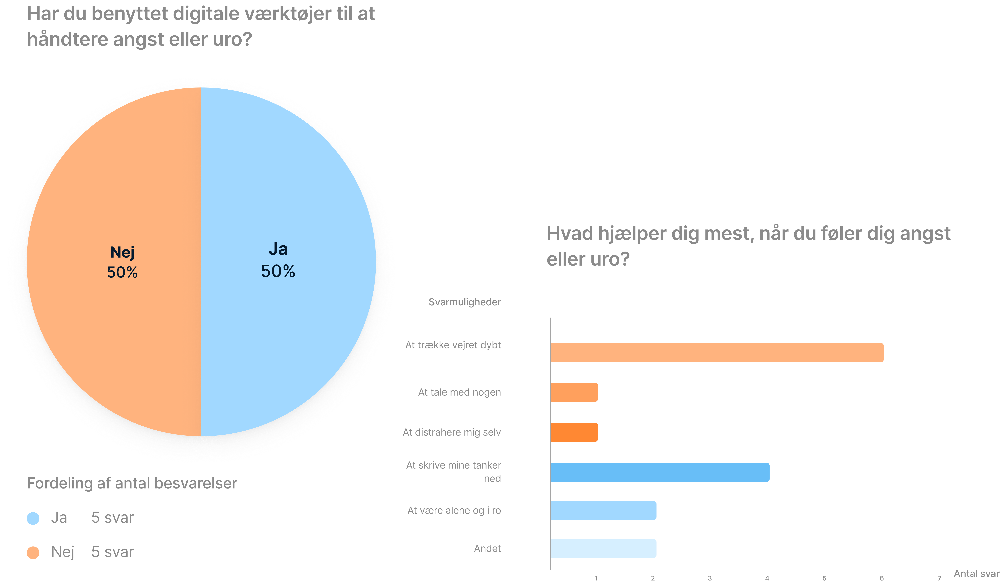

WHIRL
As the final project for my Multimedia Design degree, we explored the intersection of mental health and technology. We aimed to create an AI tool to help manage anxiety and researched how individuals are currently using AI as a support system for their mental well-being
Role
UI Design
UX research
Frontend
Type
Final Exam Project
Multimediadesign
Approach
Botpress
Design Thinking

The Mental Health Waiting Game
The mental health sector is currently facing a global crisis, characterized by excessive waiting lists that
leave individuals struggling with anxiety without immediate support. This gap in the healthcare system has
driven a rising trend where users turn to Artificial Intelligence as a surrogate for traditional therapy.
While AI offers accessibility, it introduces critical challenges regarding safety and ethical
responsibility. This project explores the tension between the urgent need for anxiety management and the
necessity of creating a responsible, AI-driven support tool that provides value without compromising mental
well-being.


What we found
The "Support Vacuum":
There is a critical gap between the initial realization of anxiety and the start of professional treatment.
Users often feel left in a "support vacuum" where symptoms can escalate due to the lack of immediate,
low-threshold tools.
The Need for Cognitive Distraction:
Anxiety is often fueled by intrusive thought loops. We found a high demand for "active grounding"—tools that
don't just track mood, but actively help users "get out of their heads" by facilitating immediate mental
shifts.
Personalization as Trust:
Generic mental health apps often feel clinical and detached. Our insights showed that trust is built through
personalization. By using an LLM to facilitate dialogue, the solution moves from being a static tool to a
dynamic companion that understands the user’s specific context.
AI Mental Health Companion
Our concept is a mobile application that bridges the gap in mental health support through a combination of
proactive nudging and reactive AI dialogue.
At its heart is an LLM-powered chatbot that facilitates supportive conversations, helping users navigate
anxious moments through real-time interaction.
To complement the dialogue, the app features a suite of
grounding tools, such as breathing exercises and metacognitive techniques. These are supported by an
intelligent calendar function that nudges the user toward consistent practice, ensuring that mental
well-being becomes a manageable, daily routine.
Co-regulate through Dialogue
The chatbot engages users in supportive conversations, helping them articulate their feelings and de-escalate anxiety in the moment.
Personalized Guidance
By leveraging Natural Language Processing (NLP), the bot can suggest specific breathing or metacognitive exercises based on the context of the conversation.
Lowering the Barrier to Support
For users who find it difficult to speak to a person, the chatbot provides a "safe space" to practice self-reflection and coping strategies.
Whirl
Whirl is a proactive mental health application designed to act as a bridge for individuals navigating
anxiety. By combining intelligent scheduling with real-time AI support and immersive exercises, Whirl
transforms passive waiting time into an active journey toward better mental well-being.
Conceptually, Whirl is built on the principle of Co-regulation. By synchronizing technology with human
physiology (breathing) and daily life (calendar), the app moves from being a simple utility to a dynamic
companion.
Using Botpress allowed us to bridge the gap between advanced LLM capabilities and clinical safety, ensuring
that the AI’s responses remain focused on de-escalation and supportive guidance without the risks often
associated with open-ended AI models.
Intelligent Calendar Synchronization
Users can schedule specific "mental pitstops" and receive proactive reminders, ensuring that self-care is woven into their daily routine rather than being an afterthought.
Context-Aware Mental Exercises
Based on the user’s schedule, Whirl suggests specific exercises tailored to the situation.
Controlled AI Dialogue (Botpress Implementation)
The heart of the interaction is a custom-built chatbot developed with Botpress. By using a controlled environment, we ensure an extra layer of "safety" and reliability.